Mittels Teilabrechnungen können innerhalb einer Periode mehrere Abrechnungen durchgeführt werden. Dies wird zum Beispiel benötigt, wenn ein Lehrling innerhalb der Periode das Lehrjahr und somit die Tarifgruppe wechselt, oder auch "Fallweise Beschäftigte" können so abgerechnet werden.
Wie wird eine Teilabrechnung erstellt?
Ø Beschäftigungen
Werden im Arbeitnehmerstamm mehrere Beschäftigungen angegeben, die innerhalb derselben Periode starten, so wird automatisch eine Teilabrechnung erstellt.
In der Auswahllistbox "Teilabrechnung" kann dann zwischen den einzelnen Abrechnungen gewechselt werden.
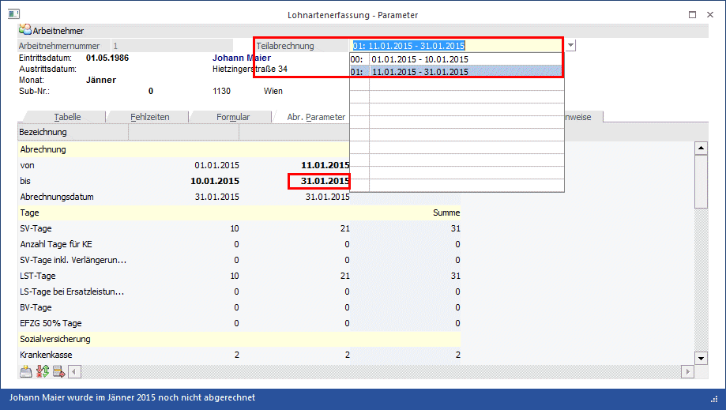
Bei der Erfassung sollte man darauf achten, in welcher Teilabrechnung man sich befindet, da für jede Teilabrechnung die Erfassung separat erfolgt.
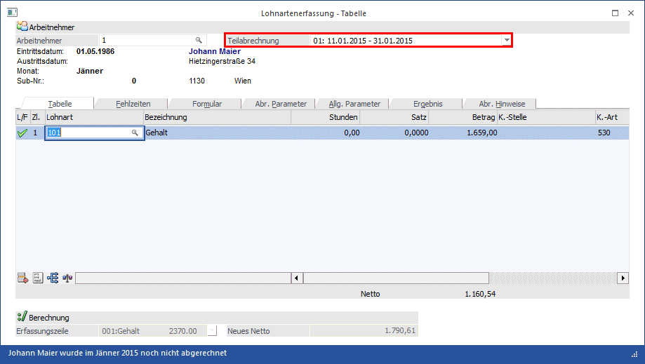
Wird die Abrechnung in einer der beiden Teilabrechnungen durchgeführt, werden immer alle Teilabrechnungen der aktuellen Abrechnung abgerechnet.
Tabellenbuttons
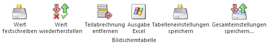
Ø Wert festschreiben
Mit diesem Button können gezielt einzelne Werte der Abrechnungsparameter festgeschrieben werden. Solange ein Wert nicht festgeschrieben ist, wird dieser bei jedem öffnen der Einzelabrechnung mit dem zu diesem Zeitpunkt aktuell gültigen Wert überschrieben (gültige Werte aus dem AN-Stamm bzw. den allgemein Gültigen Parameter).
Ø Wert wiederherstellen
Möchte man einen bereits festgeschriebenen Wert wieder herstellen und den aktuell gültigen Wert laut Stammdaten laden, so kann man dies mit diesem Button.
Ø Teilabrechnung entfernen
Mittels Teilabrechnung entfernen Button kann eine bereits erstellte Teilabrechnung wieder gelöscht werden. Dies ist nur in den Abrechnungsjahren bis einschließlich 2018 möglich. Bei einer Abrechnung die das Jahr 2019 oder höher betrifft, erhalten Sie folgende Meldung:
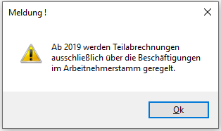
Ø Ausgabe Excel
Durch Anwahl des Buttons "Ausgabe Excel" wird der Inhalt der Tabelle nach Microsoft Excel übergeben.
Ø Tabelleneinstellungen speichern
Die Spalten einer Tabelle können grundsätzlich an beliebige Positionen verschoben, bzw. in der Breite entsprechend angepasst werden. Durch Anwahl des Buttons "Tabelleneinstellungen speichern" werden die Einstellungen benutzerspezifisch gespeichert und bei dem nächsten Aufruf des Programmpunktes wieder vorgeschlagen.
Ø Gesamteinstellungen speichern
Im Gegensatz zu "Tabelleneinstellungen speichern" können mit "Gesamteinstellungen speichern" mehrere Tabellenaufbauten gespeichert und nach Wunsch geladen werden. Zusätzlich werden Sonderfunktionen der Tabelle (z.B. "Spalte gruppieren") ebenfalls bei der Speicherung bedacht.
Buttons
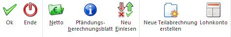
Ø Ok
Je nach Einstellung in den Applikationsparameter wird mittels "OK" Button oder der Taste F5 die Abrechnung gespeichert oder abgerechnet.
Ø Ende
Mit Hilfe des Buttons "Ende" bzw. der Taste ESC wird das Fenster geschlossen.
Ø Netto
Mittels "Netto" Button oder der Tastenkombination ALT + N wird die Abrechnung durchgeführt
Ø Pfändungsberechnungsblatt
Sind beim Arbeitnehmer gültige Pfändungstitel vorhanden, kann das Pfändungsberechnungsblatt geöffnet werden. In diesem ist ersichtlich, wie sich der pfändbare Betrag errechnet und wie dieser aufgeteilt wird.
Ø Neu Einlesen
Mittels "Neu Einlesen" Button oder der Tastenkombination ALT + E können die Parameter so wie diese aktuell laut Angaben im AN-Stamm und den Allgemeinen Abrechnungsparameter gültig sind übernommen werden.
Ø Lohnkonto
Das Lohnkonto kann parallel zur Einzelerfassung mit eingeblendet werden. Am Lohnkonto werden die kumulierten Werte bis zu der aktuellen Periode angezeigt. Erst wenn der Button "Lohnkonto" wieder deaktiviert wird, wird das Lohnkonto wieder ausgeblendet.
Hinweis:
Ø Erfassungs-EXIM
Erfassungszeilen die via Erfassungs-EXIM erfasst werden, werden immer der Teilabrechnung 0 zugeordnet.
Ø Chaoserfassung
Erfassungszeilen die via Chaoserfassung erfasst werden, werden immer der Teilabrechnung 0 zugeordnet.
Ø Stapelabrechnung
Sind Teilabrechnungen bei einem Arbeitnehmer erfasst worden, so werden diese abgerechnet und am Protokoll ausgewiesen.
Besonderheiten bei Teilabrechnung
Ø Teilabrechnungen mit Sonderzahlungen
Sonderzahlungen können immer nur bei der letzten Teilabrechnung berücksichtigt werden. Sollte bereits eine Sonderzahlung erfasst worden sein und erst dann eine Teilabrechnung angelegt werden, erhält man einen entsprechenden Hinweis, dass die Sonderzahlung in die letzte Teilabrechnung übernommen wird.
Ø Teilabrechnungen mit Pfändung
Die Pfändung wird in der letzten Abrechnung aber für alle Teilabrechnungen berücksichtigt.
Ø Teilabrechnungen bei Geringfügig Beschäftigten
Werden bei einem Geringfügig Beschäftigten Teilabrechnungen erfasst, so erfolgt die Prüfung für die Geringfügigkeitsgrenze über alle Teilabrechnungen.
Ø Teilabrechnungen mit Pendlerpauschale
Die Pendlerpauschale wird aliquot bei den jeweiligen Abrechnungen berücksichtigt.
Ø Teilabrechnungen mit Auflösungsabgabe
Die Auflösungsabgabe wird immer bei der letzten Teilabrechnung berücksichtigt
Ø Teilabrechnungen mit Service Entgelt
Das Service Entgelt wird bei jener Teilabrechnung berücksichtigt in deren Abrechnungszeitraum der 15. November fällt. Sollte der 15. November nicht in den Abrechnungszeitraum fallen, wird kein Service Entgelt berechnet.
Wie kann eine Teilabrechnung wieder gelöscht werden (gültig bis 31.12.2018)?
Eine Teilabrechnung kann mittels "Teilabrechnung entfernen" Button direkt in der Einzelabrechnung entfernt werden. Dabei ist darauf zu achten, auf welcher Teilabrechnung sich der Fokus befindet. Bevor die Teilabrechnung gelöscht wird, wird eine entsprechende Meldung angezeigt.
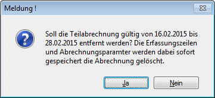
Außerdem werden Teilabrechnungen auch im "Löschen einer Abrechnung" berücksichtigt.
Teilabrechnungen in der Auswertung der Abrechnung
Am Lohnjournal und auf der Nettoliste werden Teilabrechnungen einzeln berücksichtigt
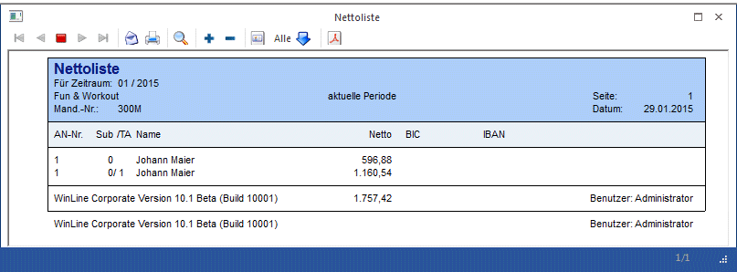
In den übrigen Auswertungen der Auswertung der Abrechnung (SV-Beleg, FIBU-Beleg, etc.) werden die Teilabrechnung gemeinsam mit den anderen Abrechnungen berücksichtigt.
Teilabrechnungen in der Auszahlung
In der Auszahlung wird pro AN eine Auszahlungszeile mit einem kumulierten Wert erstellt.
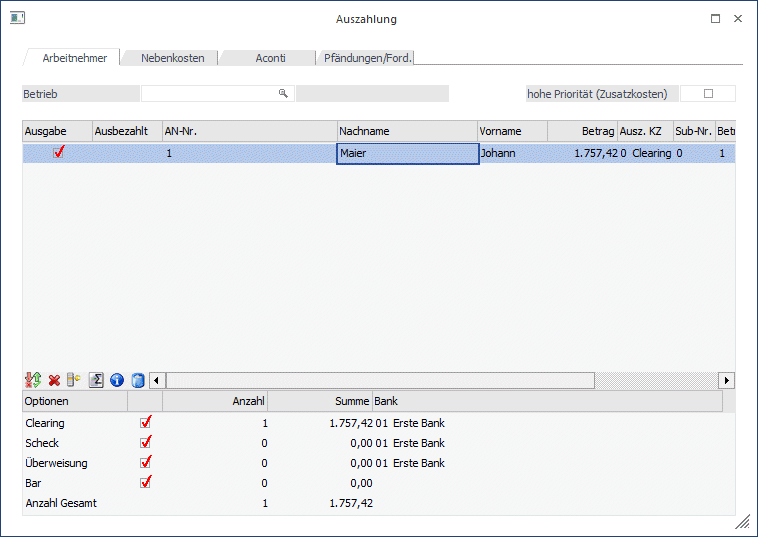
Möchte man sehen, wie sich dieser Betrag zusammensetzt, kann man dies via "Zahlungsdetails" Button anzeigen lassen. Dort ist auch zu sehen, aus welcher Teilabrechnung welcher Auszahlungsbetrag stammt.
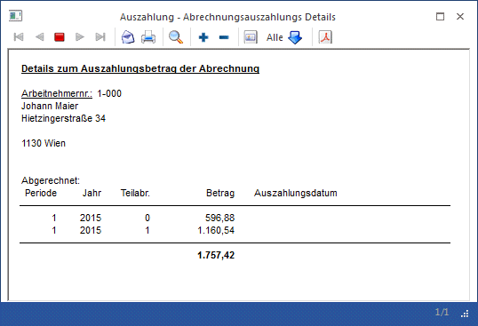
Teilabrechnungen im Lohnzettelstapeldruck
Im Lohnzettelstapeldruck werden immer alle vorhandenen Abrechnungen eines Arbeitnehmers ausgegeben.
Teilabrechnungen in Löschen einer Abrechnung
Beim Löschen einer Abrechnung werden pro Arbeitnehmer auch alle Teilabrechnungen angezeigt. Es können immer nur alle Teilabrechnungen gemeinsam gelöscht werden. Eine Einzelselektion der Teilabrechnungen ist nicht möglich.
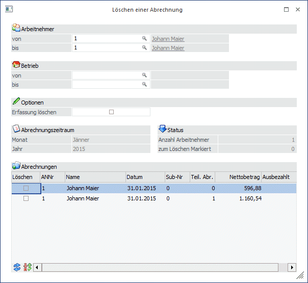
Wie werden Teilabrechnungen bei den Auswertungen berücksichtigt?
Teilabrechnungen werden in allen Auswertungen berücksichtigt. Es gibt zwei unterschiedliche Darstellungsformen:
Variante 1:
Wo eine Splittung auf die einzelnen Teilabrechnungen nicht relevant ist, werden die Werte kumuliert dargestellt.
Variante 2:
Wo eine Splittung auf die einzelnen Teilabrechnungen relevant ist, werden die Werte einzeln dargestellt. Ein Vermerk in einer eigenen Spalte weist darauf hin, dass es sich um einen Wert aus einer Teilabrechnung handelt.
Überblick über einige wichtige Auswertungen:
Ø Jahreslohnkonto
Am Jahreslohnkonto ist in der Rubrik "Anzahl Abrechnungen" ab der 2. Seite ersichtlich, ob es für eine Periode Teilabrechnungen gibt. Ist die Anzahl der Abrechnungen größer 1, so wurden für diese Periode ein oder mehrere Teilabrechnungen erstellt.
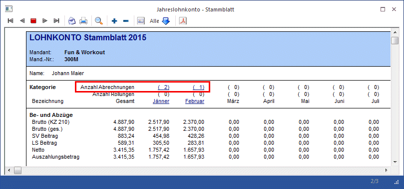
Klickt man die Zahl an, erhält man eine Übersicht über die erfassten und errechneten Werte pro Teilabrechnung.
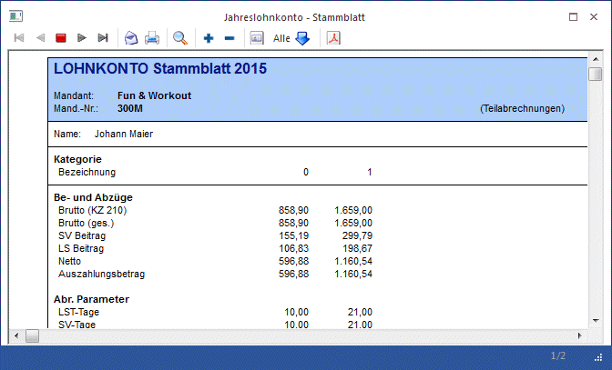
Klickt man auf den Monatsnamen, werden alle Abrechnungsbelege dieser Periode am Bildschirm angezeigt. Gibt es Teilabrechnungen, kann man mit den VCR Buttons zwischen den einzelnen Abrechnungsbelegen wechseln.
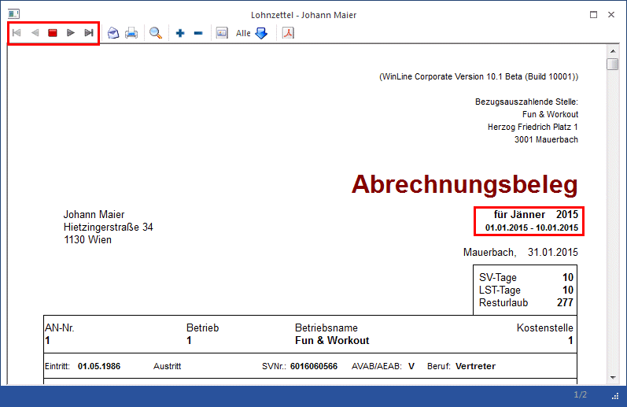
Am Jahreslohnkonto selbst, sind immer die kumulierten Werte aller Teilabrechnungen ersichtlich.
Ø Betriebssummenblatt
Am Betriebssummenblatt werden die Teilabrechnungen wie alle anderen Abrechnungen kumuliert.
Ø Lohnzettel L16/ Mitteilung E18
Am L16 werden die Teilabrechnungen wie alle anderen Abrechnungen kumuliert.
Ø Erfassungsprotokoll
Am Erfassungsprotokoll wird in der Spalte TA ausgewiesen, ob der erfasste Wert von einer Teilabrechnung stammt.
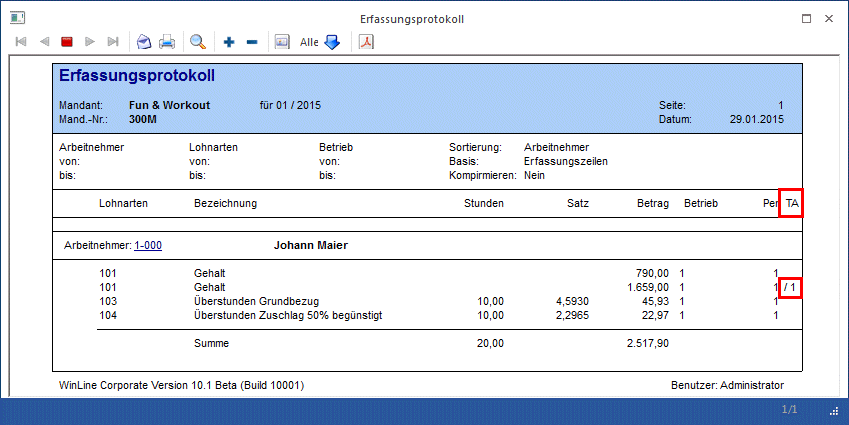
Ø Arbeitnehmer Kosten
In den Arbeitnehmer Kosten, werden die Teilabrechnungen kumuliert.
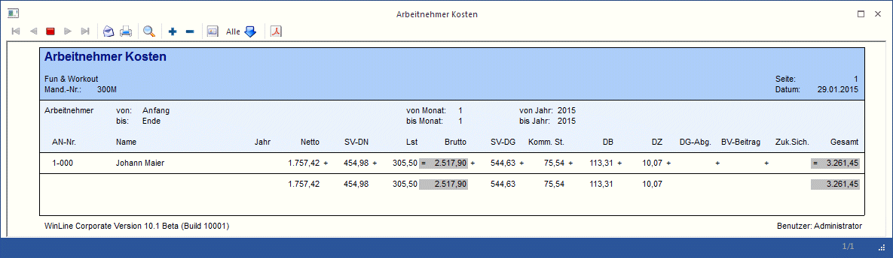
Teilabrechnungen in der Rollung
In der Rollung können auch Teilabrechnungen korrigiert bzw. hinzugefügt werden.
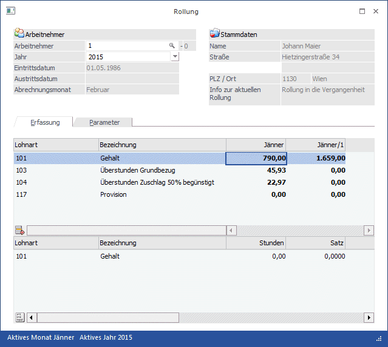